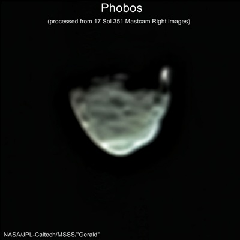
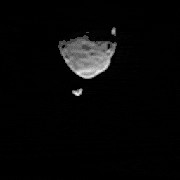
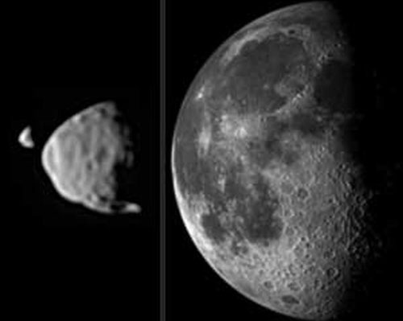

Затмение Деймоса
2013-08-01
В свой 351 день (сол) на Марсе
Curiosity
сфотографировал Фобос и Деймос в ночном марсианском небе. Телеобъектив
Mastcam был неподвижен. При этом Фобос быстро перемещается вниз,
а Деймос - медленно вверх. Они движутся в противоположных направлениях
относительно поверхности Марса потому, что Фобос опережает вращение
Марса, а Деймос отстаёт от вращения Марса (как Луна от Земли).

http ://www.unmannedspaceflight.com
(c) Gerald+Nasa
{kind=link}

(c) NASA
Фобос больше и ближе. Движение, хотя и кажется медленным, но оно ускорено в 5 раз. Точная продолжительность затмения 55 секунд.
Сутки на Марсе длятся 24 час 37 мин. Фобос делает оборот вокруг
Марса за 7 час 39 мин, Деймос - за 30 час 21 мин. Размер Фобоса
примерно 25 км, размер Деймоса 15 км. Как Луна и все известные
спутники планет Солнечной системы,
Фобос и Деймос повёрнуты к своей планете всегда
одной стороной
.
Из-за быстрого движения вокруг Марса Фобос обгоняет движение поверхности планеты. Поэтому Фобос восходит на западе . Он летит над поверхностью Марса на высоте примерно 6000 км. Это в 50 раз ближе, чем от Земли до Луны. Радиус планеты Марс примерно 3380 км. Радиус орбиты Фобоса 9400 км.

Видимый размер Деймоса и Фобоса с Марса, и Луны с Земли (c)Nasa